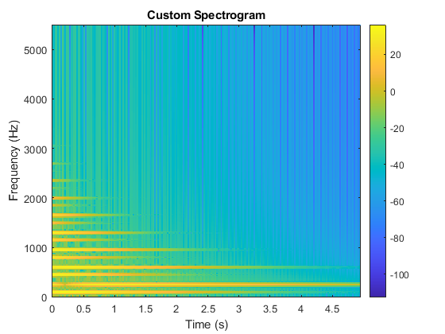
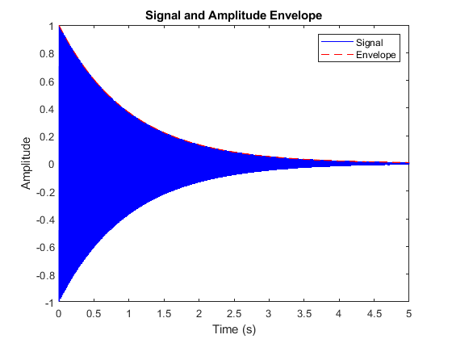
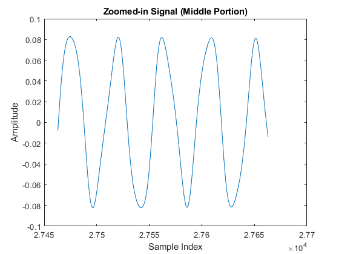

fc = 250;
fm = 350;
I0 = 3;
tau = 1;
Tdur = 5;
fs = 11025;
bell_sound = bell([fc, fm], I0, tau, Tdur, fs);
soundsc(bell_sound, fs);
filename = sprintf('bell_sound_case_6.wav', i);
audiowrite(filename, bell_sound, fs);
fprintf('Saved sound as %s\n', filename);
f0 = mygcd(fc, fm);
disp(['Fundamental frequency (f0): ', num2str(f0), ' Hz']);
t = 0:1/fs:Tdur;
I_t = I0 * exp(-t / tau);
fi_t = fc + I_t .* fm;
figure;
plot(t, fi_t);
xlabel('Time (s)');
ylabel('Frequency (Hz)');
title('Frequency Content vs. Time');
window_size = 512;
overlap = 256;
myspectrogram(bell_sound, fs, window_size, overlap);
A_t = bellenv(tau, Tdur, fs);
figure;
t = 0:1/fs:Tdur;
plot(t, bell_sound, 'b', t, A_t, 'r--');
xlabel('Time (s)');
ylabel('Amplitude');
title('Signal and Amplitude Envelope');
legend('Signal', 'Envelope');
mid_idx = round(length(bell_sound) / 2);
samples = mid_idx-100:mid_idx+100;
figure;
plot(samples, bell_sound(samples));
xlabel('Sample Index');
ylabel('Amplitude');
title('Zoomed-in Signal (Middle Portion)');
function g = mygcd(a, b)
while b ~= 0
temp = b;
b = mod(a, b);
a = temp;
end
g = a;
end
function myspectrogram(signal, fs, window_size, overlap)
N = length(signal);
step = window_size - overlap;
num_segments = floor((N - overlap) / step);
spectrogram_matrix = zeros(window_size / 2, num_segments);
for i = 1:num_segments
start_idx = (i - 1) * step + 1;
end_idx = start_idx + window_size - 1;
if end_idx <= N
segment = signal(start_idx:end_idx) .* hamming(window_size)';
else
segment = signal(start_idx:N);
segment = [segment, zeros(1, window_size - length(segment))];
segment = segment .* hamming(window_size)';
end
fft_result = abs(fft(segment));
spectrogram_matrix(:, i) = fft_result(1:window_size / 2);
end
time_axis = (0:num_segments - 1) * step / fs;
freq_axis = (0:window_size / 2 - 1) * fs / window_size;
imagesc(time_axis, freq_axis, 20 * log10(spectrogram_matrix + 1e-6));
axis xy;
xlabel('Time (s)');
ylabel('Frequency (Hz)');
title('Custom Spectrogram');
colorbar;
end
Saved sound as bell_sound_case_6.wav
Fundamental frequency (f0): 50 Hz
  